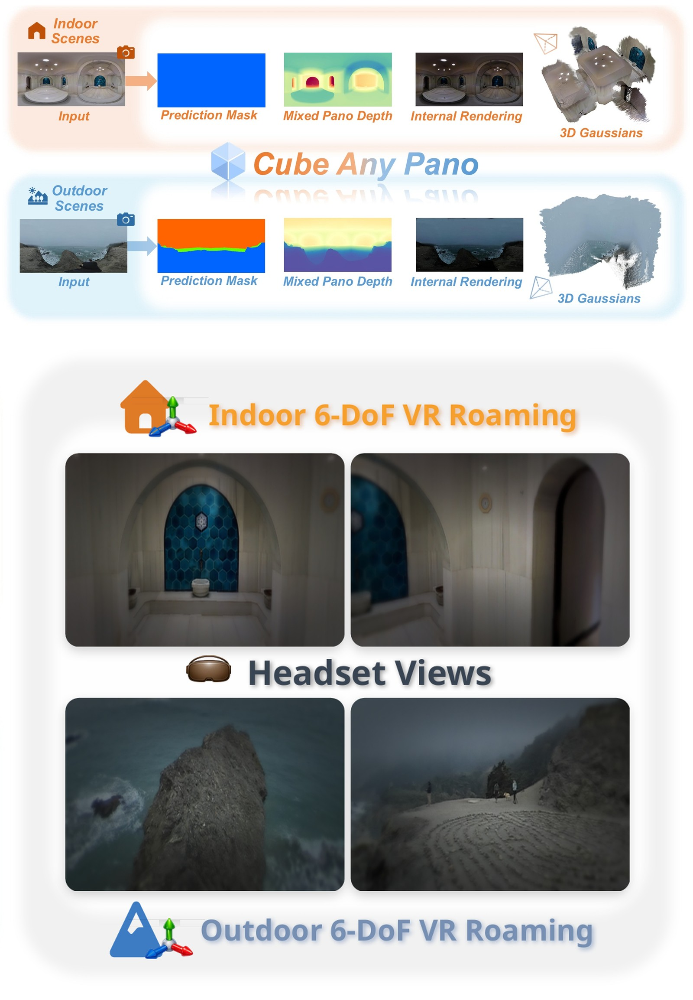
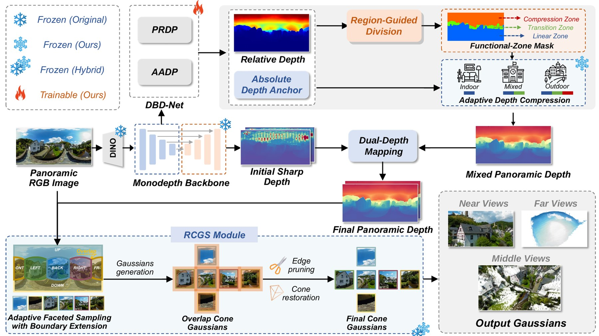
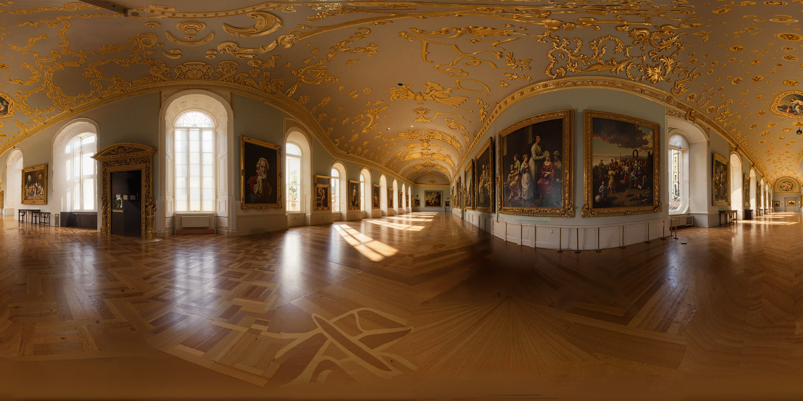
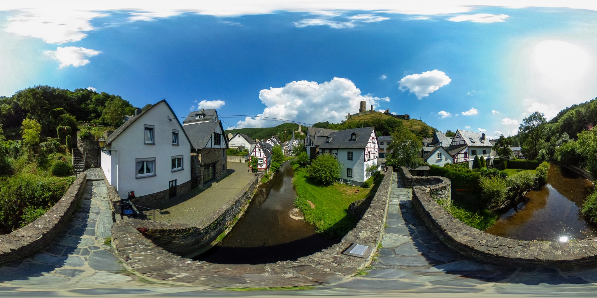

Consistent and Robust 3D Reconstruction
from a Single Panorama
One Panorama. One Forward Pass. A Navigable 3D World.
Reconstructing an immersive, navigable 3D world from a single 360° panorama remains a longstanding challenge for accessible VR content creation. Existing pipelines either rely on hours of per-scene optimization, or achieve feed-forward speed at the cost of geometric fidelity — especially near the observer, where errors are most perceptible.
We present Cube Any Pano (CAP), a feed-forward framework that turns a single equirectangular panorama into a high-fidelity 3D Gaussian Splatting scene in seconds. Our key insight is that reconstruction utility is not uniform over depth: depth precision should be allocated, not pursued uniformly. CAP therefore decouples panoramic depth estimation into two complementary specialists sharing a frozen backbone — a dense-structure specialist trained with scale-invariant objectives, and a scene-scale specialist that regresses three scene-level anchor scalars. The anchors guide adaptive depth compression that preserves near-field metric precision while converting unbounded far-field depths into a bounded, order-preserving representation. A robust cubemap Gaussian splatting module then fuses the cubemap predictions into a seamless 360° scene.
Experiments on indoor and outdoor benchmarks show that CAP consistently improves depth accuracy, reconstruction quality and rendering fidelity, while running over two orders of magnitude faster than optimization-based pipelines.

Motivation · Method · Indoor / Outdoor / Night / Sea demos · 6-DoF VR roaming
Allocate depth precision where perception demands it — then splat the panorama, seamlessly.

Depth utility decays quadratically with distance. CAP splits panoramic depth into near / transition / far zones and allocates precision per zone instead of pursuing uniform accuracy.
A dense-structure specialist (scale-invariant) and a scene-scale specialist (three metric anchors) share one frozen backbone — fine-grained geometry and global scale in a single pass.
A functional-zone mask allocates depth precision across near-, mid- and far-field: metric precision is preserved up close, while unbounded far depth maps to a bounded, order-preserving space.
Adaptive faceted sampling with boundary extension, NDC-space edge pruning with cone restoration, and a rigid cube-camera rig erase cross-face seams for a seamless 360° render.
Eight diverse scenes — one panorama in, a freely navigable 3D world out. Pick a scene, then switch between orbit, functional-zone and roaming visualizations.
—
Step inside the reconstruction. CAP scenes are rendered live in VR — walk, lean and look around with full six-degree-of-freedom motion.


Each VR world above is reconstructed from only one of these panoramas — nothing else.